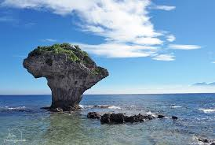
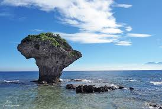

←小琉球

←民宿
←小琉球

←民宿

ABOUT x 杉板灣
住宿推薦-杉板灣民宿
杉板灣Villa| 綠色生態優質小琉球民宿推薦 座落在小琉球杉福海灣的北面平坦台地，居高臨下
、視野潦闊，俯瞰整個海灣景色、美不勝收。愛海的旅遊們、請停下你腳步，悠樂的看海、聽海、
戀海；海的故事，盡在杉板灣。
我們提供多款房型住宿、小琉球旅遊ㄧ泊二食專案行程推薦、潮間帶/夜間導覽、浮潛、小琉球風景
區與交通船票價訂購等服務。
精緻客房:
採南洋式設計(非海景房)，獨立的出入口，備有乾溼分離衛浴設備及泡澡和泡腳。除住宿房間外，
有陽台或小庭院，充分享有住房的私密空間。
標準客房:
位於游泳池上方，住宿空間配有乾濕分離的衛浴設備。綠地庭園，近在呎尺，是親子活動、團康活動
、散步的最佳場所。
相埔館標準客房:
相埔館(2館)距杉板灣本館僅一路之隔，歐式外觀建築搭配大片草坪及各類樹種、花卉，宛如置身花園農莊。